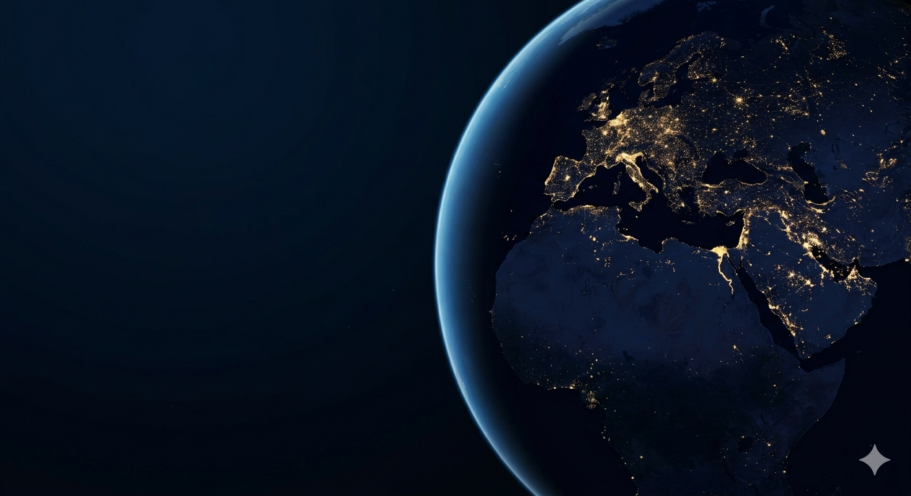

A agricultura espacial enfrenta desafios como pouca gravidade, radiação intensa, ausência de solo fértil e recursos limitados.
A ausência de solo fértil dificulta o crescimento saudável das plantas.
A radiação intensa prejudica o desenvolvimento das plantas.
Recursos limitados dificultam a manutenção do cultivo espacial.
da água doce é usada na agricultura
mais radiação no espaço
da água pode ser reutilizada
O sistema controla luz, temperatura, água, nutrientes e umidade por meio de sensores, hidroponia e automação, permitindo o crescimento saudável das plantas mesmo com baixa gravidade, radiação intensa e ausência de solo fértil
Desenvolver soluções tecnológicas que tornem possível o cultivo espacial de forma sustentável, eficiente e segura.
O projeto é voltado para astronautas, pesquisadores, cientistas, agências espaciais e futuros sistemas agrícolas sustentáveis.
A tecnologia reduz o desperdício de água, melhora a produção de alimentos e possibilita cultivos em ambientes extremos.
O sistema poderá ser utilizado em estações espaciais, bases lunares, missões para Marte e também em regiões terrestres com clima extremo.